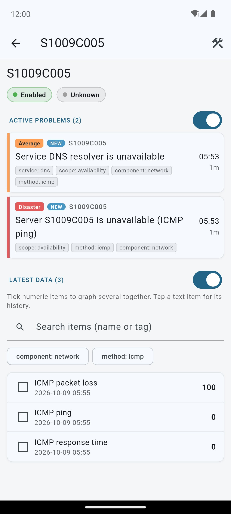
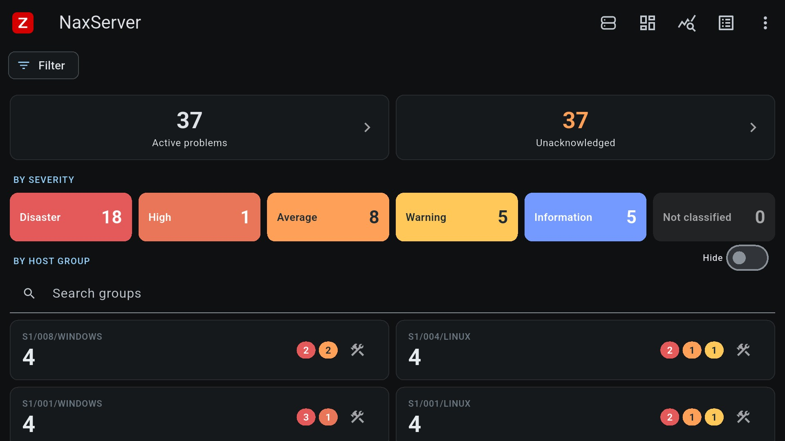

Tvůj monitoring
vždy po ruce.
Problémy v reálném čase, potvrzování událostí, dashboardy i mapa hostů. Přímo z tvého Zabbixu do telefonu, bez cloudu uprostřed.
Víš o problému dřív, než ti zavolají.
Živý přehled událostí s barvami podle závažnosti přesně jako ve webovém Zabbixu. Potvrdíš i zavřeš je přímo z telefonu, s komentářem.
- Push notifikace přes váš vlastní Firebase
- Filtry podle závažnosti, skupin a tagů, uložené jako sestavy
- Sdílení události do Teams jako přehledná karta

Tvoje dashboardy na telefonu i na zdi.
Zabbix dashboardy a widgety vykreslené nativně. Kiosk režim drží obrazovku zapnutou, takže z televize na chodbě uděláš nástěnný panel.
- Každému displeji vlastní dashboard přes MDM
- Geomapa hostů, grafy a poslední data
- Telefon, tablet, Android TV i hodinky

Kiosk režim · celoobrazovkový dashboard na televizi
Telefon připojený k Zabbixu za pár vteřin
Modul ZbxView connect přidá do Zabbixu „Připojení telefonu“. Nikdo nic nevypisuje ani neopisuje tokeny.
- 1Otevři Připojení telefonu v uživatelském nastavení Zabbixu.
- 2Naskenuj QR kód v aplikaci: Přidat server → Naskenovat.
- 3Hotovo. Každý telefon má vlastní API token, který nevyprší.
A k tomu všechno, co terénní dohled potřebuje
Postaveno na Zabbix API. Jen čtení plus potvrzení a zavření událostí, takže nic v produkci omylem nerozbiješ.
Přehled
- Geomapa hostůClusterování podle přiblížení, i offline.
- GrafyVíc položek do jednoho grafu s legendou.
- Poslední data a detail hostuHodnoty, historie i textové položky.
- ÚdržbaProbíhající, nadcházející i minulá okna.
Práce s událostmi
- Potvrzení & zavřeníAcknowledge i close s komentářem.
- Akce a komentářeKomu a jak Zabbix poslal upozornění.
- Sdílení problémuKarta do Teams, prostý text do SMS.
- PohotovostiKdo má právě službu.
Všude po ruce
- Více serverůPřepínání jedním klepnutím.
- Widget na plochuPočet otevřených problémů na ploše.
- HodinkyProblémy a potvrzení z Wear OS.
- Tmavý režimPro noční služby a OLED.
Bezpečnost
- Zámek aplikaceOtisk, obličej nebo PIN.
- Klientský certifikát (mTLS)Pro Zabbix za Cloudflare a podobnými branami.
- Údaje jen v zařízeníHesla v úložišti klíčů, žádný sběr dat.
- Synchronizace mezi zařízenímiNastavení mezi telefonem a tabletem.
Podívej se dovnitř
Ukázky přímo z aplikace.
Screenshoty se připravují.
Zdarma, s možností Pro. Pro firmy na míru.
Všechny funkce dohledu jsou ve všech verzích.
Free
- Všechny funkce dohledu
- Neomezený počet serverů
- Nenápadný banner (AdMob)
Pro
- Vše z Free
- Bez reklam
- Podpora dalšího vývoje
Enterprise
- Nasazení přes Intune / MDM
- Server, token a certifikát předvyplněné
- Nástěnky: každé obrazovce vlastní dashboard
- Bez reklam, prioritní podpora, faktura
Návody pro správce Zabbixu
Instalace krok za krokem, s příkazy a soubory ke stažení. Každý návod na vlastní stránce.
Radek Pavlík
ZbxView je můj soukromý, nezávislý projekt, který vyvíjím ve volném čase. Nevzniká na zakázku ani jménem zaměstnavatele a nesouvisí s jeho interními systémy.
Zpětná vazba i nápady na funkce jsou vítané. Ozvi se!